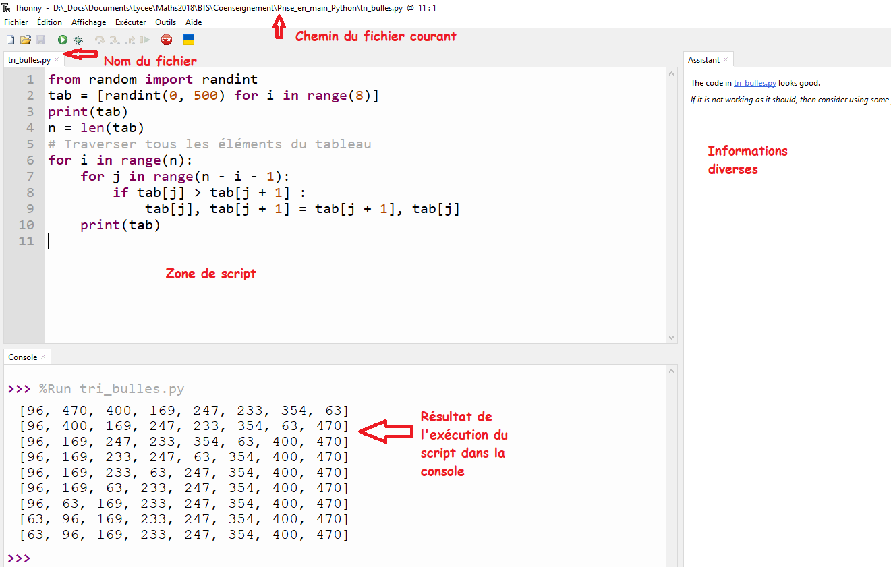

Un vrai langage informatique: Python ¶
Le langage Python a été développé au début de l'année 90 par Guido van Rossum pour l'écriture de script.
Le langage Python
Python est un langage de programmation qui peut s'utiliser dans de nombreux contextes et s'adapter à tout type d'utilisation grâce à des bibliothèques spécialisées.
L'écosystème de Python est énorme. Nous aurons, cette année l'occasion de l'utiliser dans de diverses situations.
Notre interface¶
Le langage Python est un langage de programmation interprété: on a donc besoin d'un environnement pour saisir le code d'une part, et l'exécuter d'autre part.
Un IDE
Il en existe de nombreux mais notre choix porte sur Thonny, installé sur le réseau du lycée:

En général, on tape du code Python dans la zone de script, on éxécute ensuite en appuyant sur le petit triangle vert, et on observe dans la console (ou ailleurs...), les effets du code.
Première étape: Interagir avec le programme¶
Un programme informatique fonctionne un peu comme nous: il a besoin d'information, qu'il traite puis la restitue, souvent sous une autre forme.
Exo
- Ouvrez Thonny.
- Copier dans la zone de script, le code suivant.
- Sauvegardez votre fichier sous le nom
premier_test.py. - Exécutez le script et proposez un nombre entier.
- Recommencez!
Code à copier
proposition = int(input("Donner un nombre: "))
print("Le carré de votre nombre est :", proposition**2)
Le code précédent permet de saisir une information et d'afficher dans la console le traitement effectué par le programme.
Question
Que se passe t-il si je saisis 2.4? et bonjour?
Le programme ne fonctionnne pas!
Le résultat de votre saisie est stocké dans une variable nommée proposition ici. Vous comprendrez qu'afficher le carré d'un nombre n'est possible que si le nombre est ... un vrai nombre.
Question
Mais c'est quoi un nombre en informatique?
En mathématiques, la réponse est simple ou presque. En informatique, en revanche, on distingue surtout deux types de nombres: les entiers( type int) et les décimaux(type float).
Comprendre le type d'une variable
Les variables de type nombre en python sont soit du type int soit du type float .
Ainsi si vous saisissez bonjour, ce n'est pas un nombre, donc le programme ne fonctionne pas. En revanche, cela n'explique pas pourquoi il ne fonctionne pas avec 2.4...
En fait, la panne est causée par le int devant le input qui transforme automatiquement la saisie en entier lorsque c'est possible (et ce n'est pas possible pour 2.4!).
Essayez avec ce code et vous pourrez calculer avec des flottants, noms donnés aux nombres décimaux en informatique.
Testez-ce code!
| 🐍 Script Python | |
|---|---|
1 2 | |
Si vous enlevez le int ou le float, la variable proposition perd son statut de nombre et le calcul de son carré est alors absurde...
Petite amélioration du code précédent: on va utiliser une f-string!
Une f-string ou chaîne de caractères formatée
Une f-string consiste à introduire dans une chaîne de caractères(une phrase en gros...), la valeur d'une ou plusieurs variables.
Des exemples pour mieux comprendre.
Testez-ce code!
proposition = float(input("Donner un nombre: "))
print(f"Le carré de votre nombre {proposition} est : {proposition**2}")
La variable proposition appelée dans la chaîne de caractères est automatiquement remplacée par sa valeur.
Autre exemple :
Testez-ce code!
nom = input("Donne moi ton nom! ")
taille = float(input("Donne moi ta taille en mètres"))
print(f"Tu t'appelles {nom} et tu mesures : {taille} m")
Exo
- Construire un programme informatique qui permet de saisir son âge et qui affiche votre année de naissance
- Construire un programme informatique qui permet de saisir la largeur et la longueur d'un rectangle et qui affiche son aire.
- Construire un programme informatique qui permet de saisir votre prénom et une note et qui affiche par exemple
Je m'appelle Henri et j'aimerai avoir 18 en NSIouJe m'appelle Maria et j'aimerai avoir 4 en NSI...
On utilise des variables pour stocker une information de type nombre ou texte. Leur nom doit être explicite!
Deuxième étape: les instructions conditionnelles¶
Voici un programme qui affiche un texte différent selon la valeur de la variable age.
Testez-ce code!
| 🐍 Script Python | |
|---|---|
1 2 3 4 5 | |
La ligne 1 permet de saisir une valeur (entière).
La ligne 2 effectue un test pour évaluer l'expression age >= 18:
- si cette évaluation est vrai (
True) alors le programme réalise l'instruction à la ligne3:print("Tu es majeur(e)!"). - si cette évaluation est fausse (
False) alors le programme réalise l'instruction à la ligne5:print("Tu es mineure(e)!").
Attention!
Le langage Python utilise l'indentation(retrait par rapport à la ligne...) pour délimiter les blocs d'instructions.
Sans ce retrait le programme ne fonctionnerait pas.
Exo
Donner un programme qui permet de saisir une note et qui affiche Vous avez la moyenne si la note saisie est plus grande ou égale à 10 et Vous n'avez pas la moyenne sinon.
Est-il possible d'ajouter des conditions supplémentaires? La réponse est oui est le code suivant le prouve!
Testez-ce code!
| 🐍 Script Python | |
|---|---|
1 2 3 4 5 6 7 | |
Chaque elif est un if supplémentaire qui permet d'ajouter une nouvelle condition. Même si ce n'est pas obligatoire, il est conseillé de toujours finir par un else.
Dans l'exercice suivant, nous allons utiliser le module random et précisément la méthode randint qui permet de générer des nombres aléatoires, entiers ou non.
Info
La méthode randint(a, b) permet de générer un nombre entier au hasard entre les nombres entiers a et b, a et b inclus .
Par exemple,
- la variable
n = randint(0, 100)a pour valeur un nombre entier au hasard entre0et100. - la variable
de = randint(1, 6)a pour valeur un nombre entier au hasard entre1et6: elle simule le lancer d'un dé!
Attention!!
Si tu veux savoir si deux variables différentes ont la même valeur il faut utiliser le double égal ==.
Imaginons le jeu qui consiste à lancer un dé: si tu obtiens 6 tu gagnes 10 euros et sinon tu perds 1 euros. Alors la simulation de ce jeu serait:
Testez !
| 🐍 Script Python | |
|---|---|
1 2 3 4 5 6 7 | |
À la ligne 1, je place un commentaire( avec le #) pour expliquer ce que je fais: cette ligne ne sera pas lue ni interprétée par Thonny.
À la ligne 3, j'affecte à la variable de un entier aléatoire entre 1 et 6.
À la ligne 4, je teste pour savoir si la variable de vaut la valeur 6!
Exo
- Créer une variable
nombre1à laquelle tu affectes un nombre aléatoire entier entre1et9. - Créer une variable
nombre2à laquelle tu affectes un nombre aléatoire entier entre1et9. - Créer un affichage à l'écran
Combien vaut le produit de nombre1 x nombre2?où les variablesnombre1etnombre2sont remplacées par leur valeur(utilise unef-string). - Récupère la réponse de l'utilisateur et stocke-là dans une variable
reponse. - Si la réponse est correcte fait afficher
Bravo!sinon fait afficherPerdu! La bonne réponse était....
Retenez!
Les variables permettent de stocker des valeurs de différents types: int pour des entiers, float pour des nombres décimaux et str pour des chaînes de caractères.
L'action d'affectation consiste à attibuer une valeur à une variable avec le signe =: par exemple note = 10 ou prenom = "Charles" sont des variables de type int pour le premier et string pour le second.
Pour tester si deux variables ont des valeurs égales on utilise le symbole == pour les comparer: par exemple, l'instruction nom == prenom est vraie (True) si les variables ont les mêmes valeurs et fausse (False) sinon.